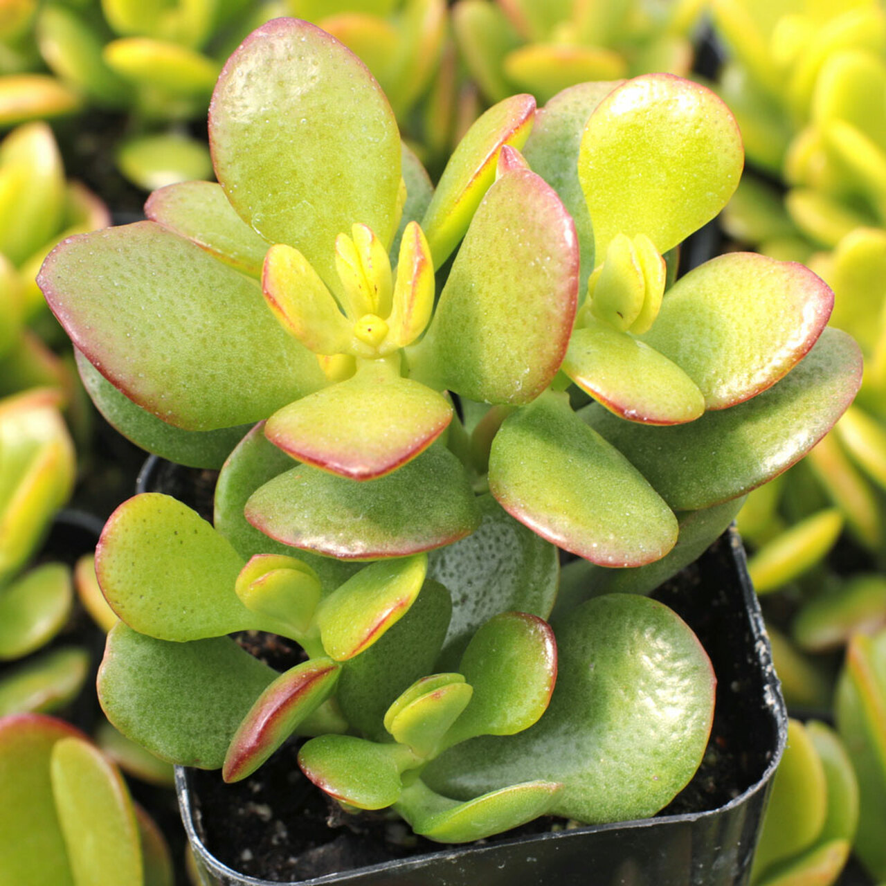
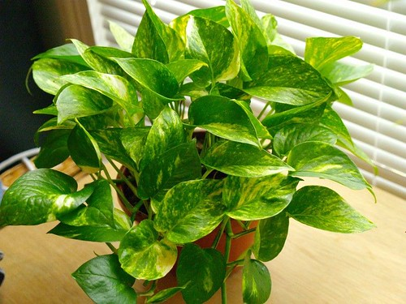
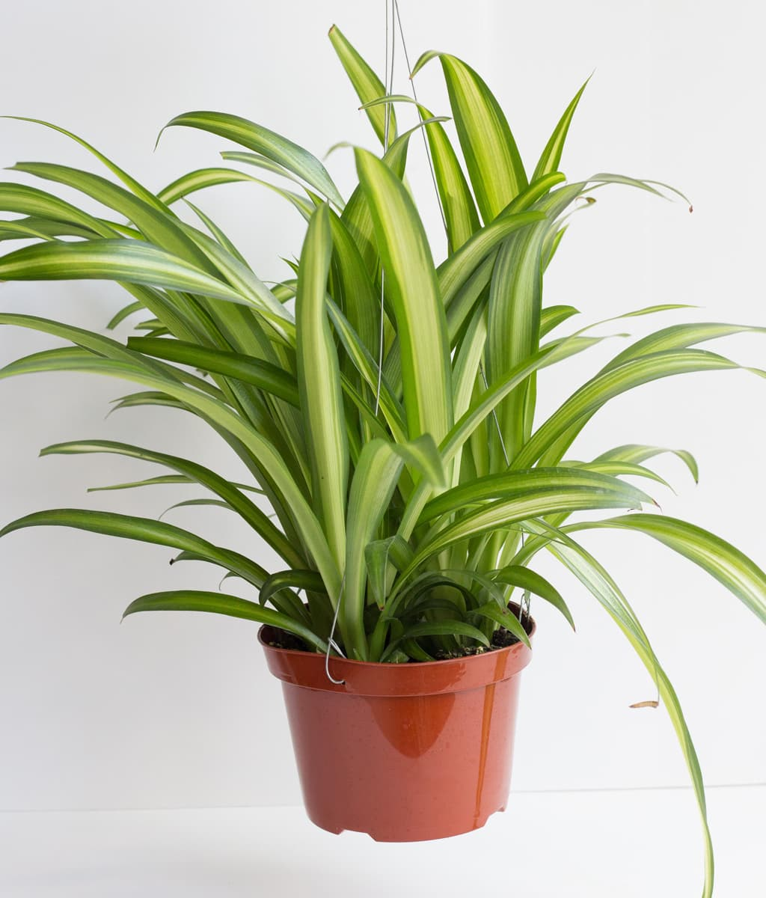
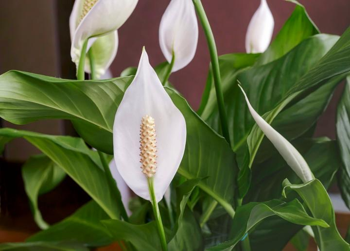

Título:El árbol de jade (Crasula ovata)
Descripción:Es una de las suculentas más conocidas del mundo. Sus hojas carnosas y su porte de arbolito, además de su resistencia a la sequía, hacen de ella una especie muy querida tanto entre los principiantes como entre aquellas personas que tienen más experiencia en el cultivo de este tipo de plantas.
Precio:$150
Título:El potus (Epipremnum aureum)
Descripción:Las decorativas hojas variegadas tienen gran parte de la culpa. Pero su enorme resistencia y la facilidad del cultivo es lo que termina de inclinar la balanza a su favor.
Precio:$120
Título:Las cintas (Chlorophytum comosum)
Descripción:Utilizada en jardinería por la belleza de sus hojas encintadas, alargadas y péndulas que nacen de una roseta basal, de color verde con una banda blanca central.
Precio:$160
Título:El espatifilo (Spathiphyllum)
Descripción:Es originaria de México, América tropical, Malasia y oeste del Pacífico. Son plantas perennes herbáceas con hojas grandes de 12-65 cm de largo y 3,25 cm de ancho
Precio:$180